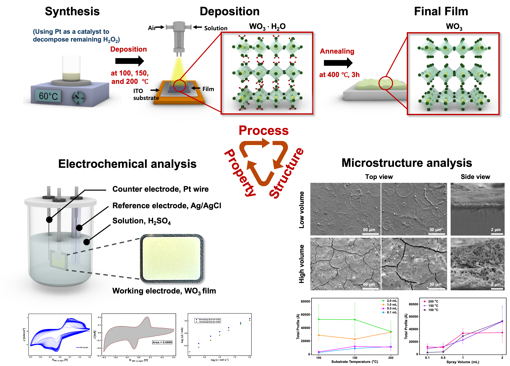

Process-Structure-Property Relationships in Thin-Film Electrodes

This work investigates how spray-pyrolysis processing conditions control the structure and proton-storage behavior of WO3 thin-film electrodes. WO3 films were deposited on ITO substrates under systematically varied fabrication conditions and subsequently evaluated through structural, morphological, and electrochemical characterization.
By correlating synthesis conditions with film morphology and electrochemical response, the study aims to establish direct processing–structure–property relationships and identify the structural features that govern proton intercalation and charge-storage mechanisms.
Methods
Key Findings
Processing conditions strongly modify film morphology
Changes in deposition temperature and precursor volume produced distinct differences in film uniformity, roughness, cracking, and thickness, demonstrating direct control of WO3 microstructure through spray-pyrolysis conditions.
Uniform thin films favor diffusion-controlled proton storage
Thin and uniform WO3 films exhibited electrochemical behavior dominated by proton diffusion into the electrode, indicating effective bulk intercalation under optimized processing conditions.
Increasing film thickness changes the dominant storage mechanism
Thicker and rougher films showed higher impedance and an increasing contribution from surface-controlled charge storage, highlighting the importance of morphology in determining electrochemical kinetics.